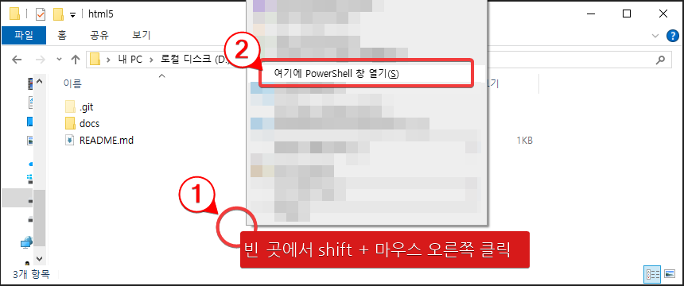
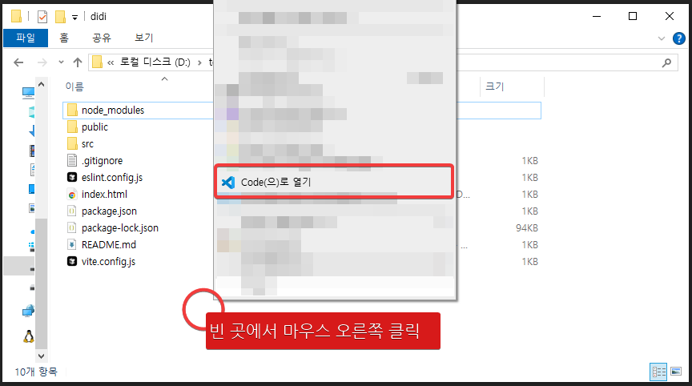
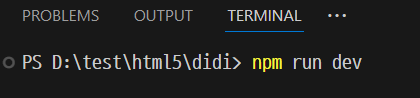
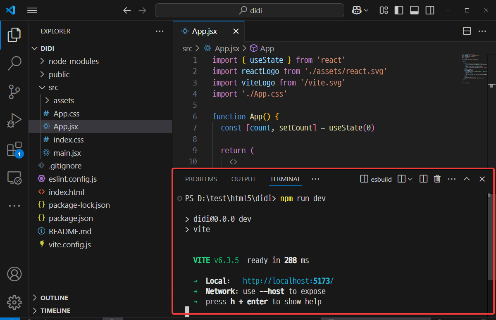
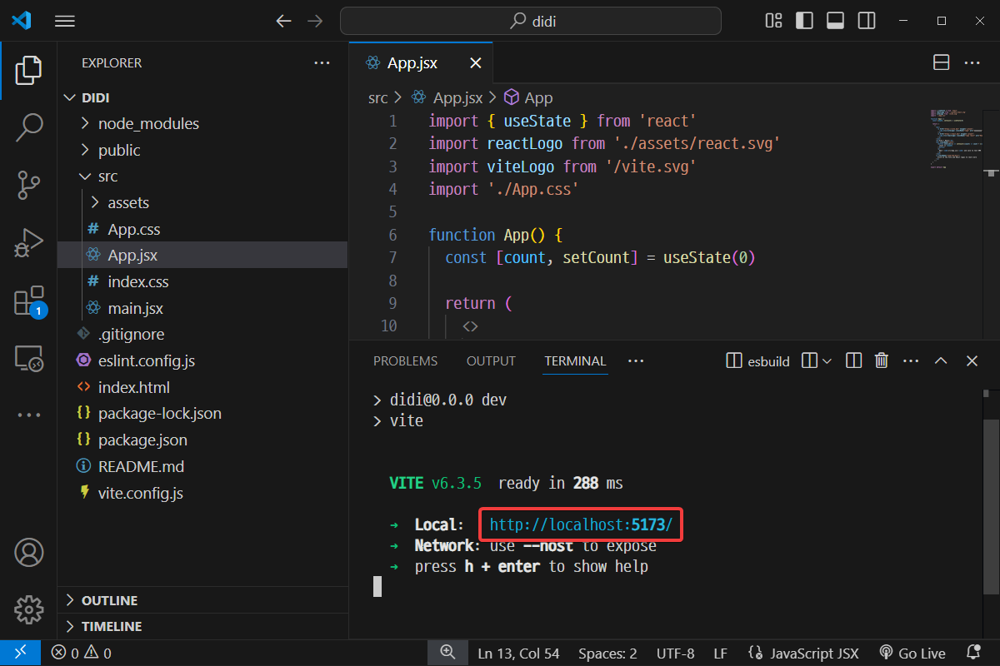
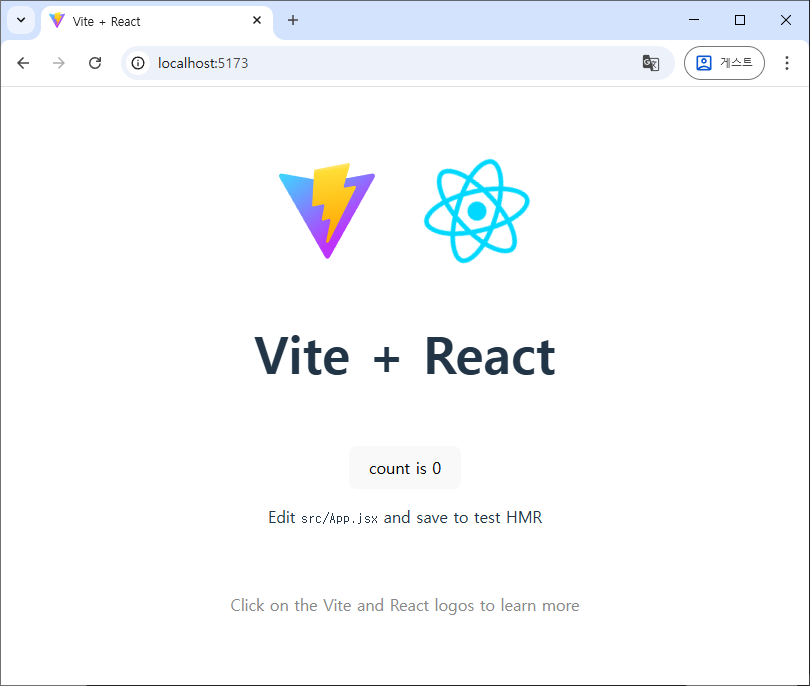
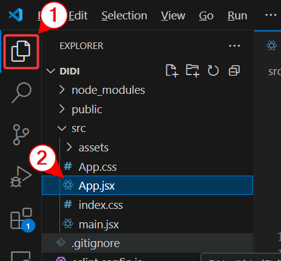
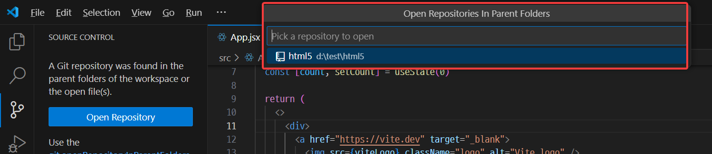
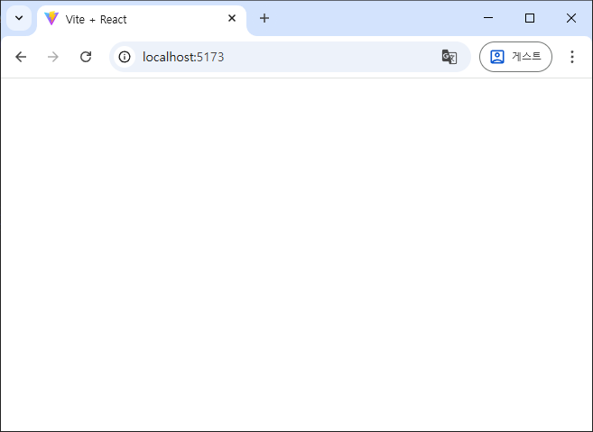

vite - react 프로젝트 생성
프로젝트를 생성하기 위해 d:\test\html5 폴더에서 power shell을 실행한다.

탐색기 D:\test\html5i 폴더에서 빈 부분을 shift 키를 누른 채로 마우스 오른쪽 클릭하고 [여기에 Power shell 창 열기] 메뉴 선택
PS D:\test\html5> npm create vite
> npx
> create-vite
|
o Project name:
| didi
|
o Select a framework:
| React
|
o Select a variant:
| JavaScript
|
o Scaffolding project in D:\test\html5\didi...
|
— Done. Now run:
cd didi
npm install
npm run dev
PS D:\test\html5>
power shell에서 위와 같이 npm create vite 를 실행해 vite - react 프로젝트를 생성하면서 다음과 같이 옵션을 정해준다.
- project name: didi
- Select a framework: React
- Select a variant: JavaScript
프로젝트 생성이 완료되면 다음과 같이 프로젝트를 실행한다.
PS D:\test\html5> cd didi
PS D:\test\html5\didi> npm install
결과
added 198 packages, and audited 199 packages in 21s
33 packages are looking for funding
run `npm fund` for details
found 0 vulnerabilities
PS D:\test\html5\didi>
vscode 실행하면서 didi 프로젝트 읽어들이기
탐색기에서 d:\test\html5\didi 폴더로 이동한다.

탐색기의 빈 곳에서 오른쪽 클릭한다.
팝업 메뉴에서 [code(으)로 열기] 를 선택한다.
그럼 아래와 같이 vscode가 실행된다.

이 폴더를 만든 사람을 믿느냐는 질문이 나오는데 이거 만든 사람 나니까 그냥 파란색의 [Yes I trust the authors] 버튼을 클릭한다.
vscode에서 프로젝트 실행하기
ctrl 키를 누른 상태에서 ` 키를 누르면 vscode의 아래쪽에 power shell 같은 창이 열린다.
` 키는 [tab]키 위, [ESC]키 아래 쪽에 있는 키이다.

여기에 npm run dev 라고 입력한다.
npm run dev

그럼 다음과 같이 프로젝트가 실행된다.
vscode는 이렇게 프로그램 개발에 필요한 기능들이 매우 많이 포함되어 있어 편하게 개발할 수 있도록 도와준다.
만약 이런 기능이 없다면 power shell과 vscode를 왔다갔다 하며 개발해야 하는데 vscode에 power shell이 내장되어 있어 하나의 프로그램 안에서 편하게 개발할 수 있다.
power shell에는 내가 만든 프로그램이 실행되면서 발생하는 상황이 나타난다. 이게 흔히 log 라고 부르는 것들이다.

PS D:\test\html5\didi> npm run dev
> didi@0.0.0 dev
> vite
VITE v6.3.5 ready in 288 ms
➜ Local: http://localhost:5173/
➜ Network: use --host to expose
➜ press h + enter to show help

http://localhost:5173/ 부분을 ctrl 키를 누른 채로 클릭하면 웹브라우저가 실행되면서 저 주소까지 자동으로 이동한다.

이렇게 vite + react 프로젝트를 생성하면 자동으로 생성되는 앱의 모습을 볼 수 있다.
이렇게 기본으로 제공되는 기능은 우리에게는 필요없기 때문에 아래에서 모두 지울거다.
vscode를 이용한 코드 수정

먼저 src/App.jsx 파일을 수정하려 하면 vscode에서 위와 같이 파일을 클릭하면 된다. 그럼 오른쪽에 그 파일의 내용이 나타난다.
vscode를 이용한 github 관리
이 프로젝트는 지금 github로 부터 복제한 html5 repository 내에 생성했다. 그래서 이 프로젝트도 github로 관리할 수 있다. github는 사실 프로그램을 수정할 때마다 그 버전을 관리하기 위한 프로그램이다.

위 순서대로 클릭하면,

vscode가 우리의 html5 레포지토리를 찾아내서 보여준다.
여기서 html5 를 클릭하면 이제부터 우리는 vscode를 이용해 github의 버전관리 기능을 이용할 수 있다.
프로젝트가 생성된 직후의 코드, 그러니까 아래에서 불필요한 부분을 다 삭제하기 전의 모습을 하나의 버전으로 기록하고 싶다면

위와 같이 [1] 부분에 이번 버전에 대한 설명을 적고, [2]와 같이 [Commit] 버튼을 눌러 commit 한다. 여기서 commit 하면 github desktop에서도 commit 한 것과 똑같이 적용된다. (github desktop에서도 commit한 이후의 모습이 나타난다.)
commit을 여러 번 한 다음, 서버에 보내는 push main은 나중에 한꺼번에 해도 된다.
프로젝트에서 불필요한 부분 모두 정리하기
다음을 따라 프로젝트에서 불필요한 부분을 모두 삭제하자.
App.jsx에서 불필요한 부분 모두 삭제하기
function App() {
return (
<>
</>
)
}
export default App
App.jsx 파일이 꽤 긴데 위와 같은 코드만 남기고 전부 다 지우자.
여기까지 작업하고 저장하면, 웹브라우저에 이 작업 내용이 자동으로 반영된다. (refresh를 하지 않아도 자동으로 반영된다)

App.css 파일 삭제
우리는 쓸 일이 없으니 App.css 파일을 지운다.